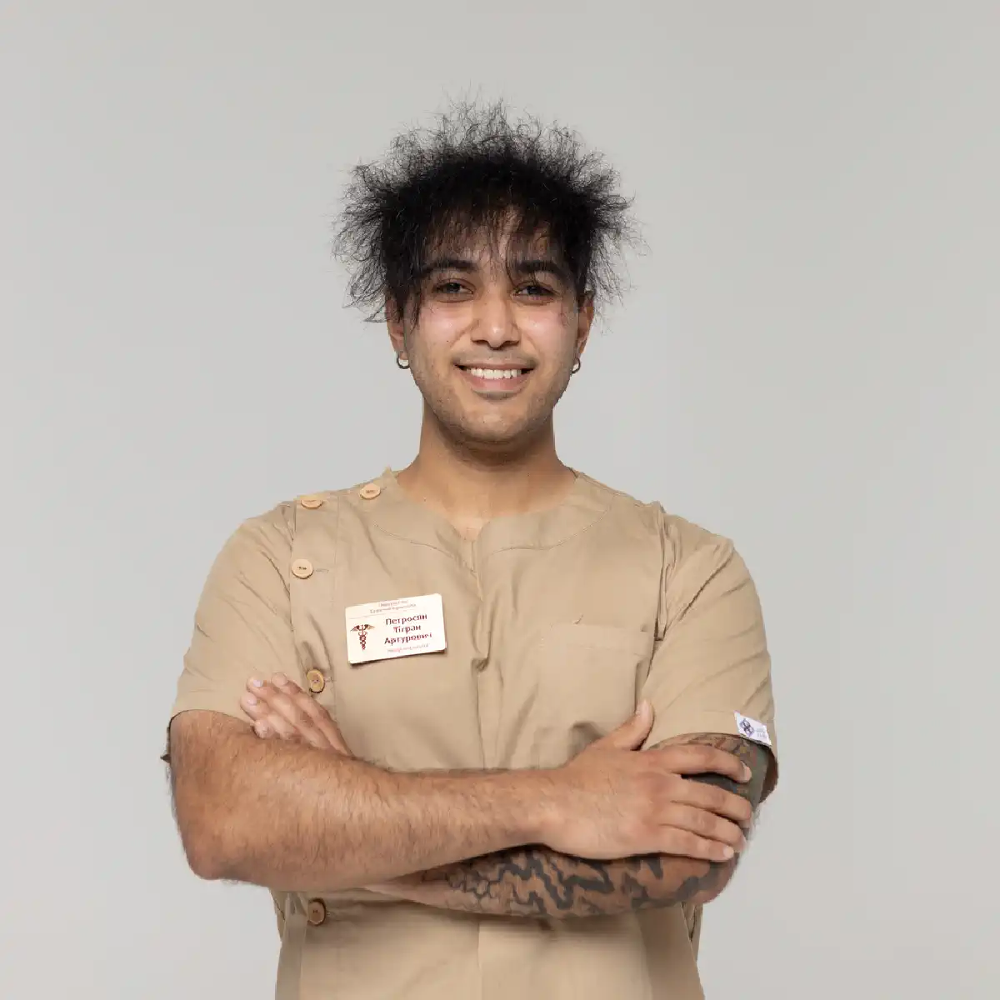

+38(068) 79 72 782
+38(068) 79 72 782Лечение наркомании в Киеве
Мы рядом — Выход есть


Бесплатная консультация, работаем круглосуточно 24/7
Мы рядом — Выход есть
Наркомания — это тяжёлое хроническое заболевание, которое поражает не только физическое здоровье человека, но и его психику, социальную жизнь, отношения с близкими. В Киеве проблема наркотической зависимости остаётся крайне актуальной, поскольку доступность психоактивных веществ и их разнообразие приводят к быстрому формированию привыкания и тяжёлых осложнений. Лечение наркомании в Киеве требует профессионального медицинского подхода, комплексной терапии и индивидуальной программы восстановления. Самолечение или попытки «перетерпеть» зависимость без помощи специалистов зачастую заканчиваются срывами и опасными для жизни состояниями.
Наркотическая зависимость развивается постепенно, но практически всегда приводит к разрушительным последствиям. У человека меняется поведение, ухудшается память и внимание, снижается работоспособность, появляются проблемы с законом, финансами и семейными отношениями. Со временем страдают все органы и системы организма: печень, сердце, почки, нервная система и головной мозг. Многие зависимые люди теряют работу, разрывают связи с близкими, оказываются в социальной изоляции. Именно поэтому наркомания является не просто вредной привычкой, а серьёзной медицинской и социальной проблемой, требующей своевременного вмешательства специалистов. Лечение наркомании в Киеве должно начинаться как можно раньше, поскольку с каждым месяцем употребления психоактивных веществ зависимость становится всё сильнее, а последствия — всё более тяжёлыми и необратимыми. Современная наркология рассматривает зависимость как комплексное заболевание, которое затрагивает тело, психику и социальную сферу человека. Поэтому эффективная терапия включает не только медикаментозное лечение, но и психологическую поддержку, реабилитацию и восстановление нормального образа жизни.
Крайне важно понимать, что наркомания — это излечимое заболевание, если вовремя обратиться за профессиональной помощью. Современная наркология располагает всеми необходимыми методами для эффективного лечения и реабилитации зависимых людей. Главное — сделать первый шаг и доверить своё здоровье опытным специалистам. Обращение за лечением наркомании в Киеве — это возможность начать новую жизнь без наркотиков, вернуть здоровье, восстановить отношения с близкими и обрести уверенность в завтрашнем дне. Профессиональная медицинская помощь, поддержка психологов и комплексный подход позволяют добиться стойкой ремиссии и устойчивого результата. Чем раньше начата терапия, тем выше шансы на полное и успешное выздоровление.
Лечение наркомании в Киеве проводится поэтапно и включает медицинскую детоксикацию, снятие абстинентного синдрома, стабилизацию психоэмоционального состояния и дальнейшую реабилитацию. Главная задача — не просто временно облегчить состояние пациента, а устранить физическую и психологическую зависимость, снизить тягу к наркотикам и помочь человеку вернуться к нормальной жизни. Важным преимуществом профессионального лечения является постоянный контроль врачей, возможность корректировать терапию и предотвращать осложнения. Комплексный подход к лечению наркомании основан на глубоком понимании природы зависимости. Современная наркология рассматривает употребление наркотиков не как слабость характера, а как серьёзное хроническое заболевание, требующее грамотной медицинской помощи. Именно поэтому терапия должна быть последовательной, продуманной и индивидуально подобранной для каждого пациента. Универсальных схем лечения не существует, так как вид наркотика, стаж употребления, состояние здоровья и психологические особенности у всех людей различаются.
Первым и одним из самых важных этапов лечения является детоксикация организма. Большинство наркотических веществ вызывают тяжёлую физическую зависимость, и резкий отказ от них сопровождается выраженным абстинентным синдромом — так называемой «ломкой». В этот период человек может испытывать сильные боли, тревогу, бессонницу, нарушения сердечного ритма, скачки давления, тошноту и другие тяжёлые симптомы. Медицинская детоксикация позволяет безопасно очистить организм от токсинов, стабилизировать жизненно важные функции и значительно облегчить состояние пациента. После снятия острых симптомов начинается следующий этап — медикаментозная и психологическая стабилизация. В этот период врачи работают над восстановлением нормальной работы нервной системы, устранением тревожности, депрессии и нарушений сна. Для этого используются современные лекарственные препараты, витаминные комплексы, поддерживающая терапия для печени, сердца и других органов, пострадавших от воздействия наркотиков. Очень важно, чтобы на этом этапе пациент находился под постоянным наблюдением специалистов, поскольку риск срыва всё ещё остаётся достаточно высоким.
Однако основная сложность лечения наркомании заключается не только в физической, но и в психологической зависимости. Даже после полного очищения организма у человека сохраняется сильная тяга к наркотикам, привычные модели поведения и ассоциации, связанные с употреблением. Именно поэтому ключевую роль в выздоровлении играет полноценная реабилитация. Этот этап направлен на глубокую работу с психикой пациента, формирование устойчивой мотивации к трезвости и обучение навыкам жизни без психоактивных веществ. Лечение наркомании в Киеве — это не одномоментная процедура, а длительный процесс, требующий терпения, усилий и профессиональной поддержки. Но при правильном подходе и своевременном обращении за помощью зависимость можно победить. Тысячи людей в Киеве уже смогли вернуться к трезвой жизни, восстановить здоровье, семью и социальный статус благодаря современным методам терапии.
Снятие ломки и детоксикация от наркотиков — это первый и один из самых важных этапов лечения. Абстинентный синдром возникает при прекращении употребления наркотиков и может сопровождаться выраженными физическими и психическими симптомами. Детоксикация направлена на выведение токсинов, продуктов распада наркотических веществ и восстановление работы внутренних органов. Процедуры проводятся под наблюдением врача-нарколога, что позволяет безопасно облегчить состояние пациента и подготовить его к дальнейшему лечению зависимости.
Практически все наркотические вещества вызывают стойкую физическую и психологическую зависимость. При резком отказе от их употребления организм начинает остро реагировать на отсутствие привычной дозы. Это приводит к развитию так называемой «ломки» — тяжёлого состояния, которое нередко становится главной причиной повторного употребления. Человек испытывает сильнейший дискомфорт, боли, тревогу, бессонницу, депрессию и множество других неприятных симптомов. Без профессиональной медицинской помощи справиться с этим состоянием крайне сложно, а иногда и опасно для жизни. Снятие ломки в условиях клиники или на дому позволяет значительно облегчить страдания пациента и сделать процесс отказа от наркотиков максимально безопасным. Врач-нарколог оценивает общее состояние человека, учитывает вид употребляемого вещества, стаж зависимости и наличие сопутствующих заболеваний. На основании этих данных подбирается индивидуальная схема терапии, которая помогает постепенно и без серьёзных осложнений вывести человека из тяжёлого абстинентного состояния.
Медицинская детоксикация представляет собой комплекс лечебных мероприятий, направленных на очищение организма от наркотических веществ и восстановление нормальной работы всех систем. Основным методом является инфузионная терапия — постановка капельниц с дезинтоксикационными растворами, витаминами, электролитами и препаратами для поддержки сердца, печени и нервной системы. Такой подход позволяет ускорить естественные процессы очищения организма и значительно сократить продолжительность абстинентного синдрома. Снятие ломки и детоксикация от наркотиков — это фундамент успешного лечения наркомании. Обращение к опытным специалистам позволяет пройти этот этап безопасно, без лишних страданий и рисков для здоровья, открывая путь к дальнейшей реабилитации и полноценной жизни без наркотиков.
Капельница от наркотиков в Киеве является эффективным методом медицинской помощи при интоксикации и ломке. Инфузионная терапия помогает быстро стабилизировать состояние пациента, восстановить водно-электролитный баланс, поддержать работу сердца, печени и нервной системы. Состав капельницы подбирается индивидуально в зависимости от вида наркотика, длительности употребления и общего состояния здоровья. Уже в первые часы после начала терапии многие пациенты отмечают заметное облегчение самочувствия.
Применение капельницы при наркотической интоксикации позволяет воздействовать на проблему комплексно. Внутривенное введение лекарственных препаратов обеспечивает их быстрое попадание в кровь и немедленное начало действия, что особенно важно при тяжёлом состоянии пациента. В отличие от таблеток и других форм медикаментов, инфузионная терапия не нагружает желудочно-кишечный тракт и позволяет максимально точно контролировать дозировку необходимых веществ. Во время процедуры в организм вводятся специальные дезинтоксикационные растворы, которые способствуют активному выведению токсинов и продуктов распада наркотиков. Дополнительно используются витамины, электролиты, препараты для нормализации давления и сердечного ритма, средства для защиты печени и восстановления нервной системы. Такой комплексный состав помогает не только снять острые симптомы, но и предотвратить развитие возможных осложнений, связанных с длительным употреблением психоактивных веществ.
Капельница от наркотиков особенно актуальна при выраженном абстинентном синдроме, когда человек испытывает сильные физические и психические страдания. Ломка может сопровождаться сильными болями, судорогами, тошнотой, рвотой, бессонницей, тревогой, паническими атаками и резкими перепадами давления. Без медицинской помощи справиться с таким состоянием крайне сложно. Инфузионная терапия позволяет мягко и безопасно купировать эти симптомы, значительно облегчая процесс отказа от наркотиков. Несмотря на высокую эффективность, капельница является лишь первым этапом лечения наркомании. Она помогает снять острое состояние, очистить организм и улучшить самочувствие, но не устраняет психологическую зависимость. Поэтому после проведения детоксикации крайне важно продолжить лечение: пройти курс реабилитации, психотерапии и социальной адаптации. Только комплексный подход позволяет добиться устойчивой ремиссии и предотвратить повторные срывы.
Стоимость лечения наркомании в Киеве начинается от 3000 грн.
| Популярные услуги | Цена |
|---|---|
| Вывод из запоя на дому | От 2700 грн |
| Капельница от алкоголя | От 2700 грн |
| Капельница от наркотиков | От 3000 грн |
| Кодирование от алкоголизма Киев | От 6000 грн |
Наркотическая ломка может проявляться по-разному в зависимости от вещества, длительности употребления и индивидуальных особенностей организма, но чаще всего включает целый комплекс тяжёлых физических и психических симптомов. К наиболее распространённым проявлениям абстинентного синдрома относятся:
Интенсивность этих симптомов может быть настолько высокой, что человек практически полностью теряет способность нормально функционировать. При некоторых видах наркотической зависимости ломка сопровождается судорогами, галлюцинациями, сильнейшими головными болями, нарушениями сознания и выраженными психическими расстройствами. Такое состояние не только крайне мучительно, но и представляет реальную угрозу для здоровья и даже жизни пациента.
Без медицинской помощи симптомы могут быстро нарастать и приводить к серьёзным последствиям. Длительное обезвоживание, истощение организма, сбои в работе сердца и нервной системы нередко становятся причиной опасных осложнений. Кроме того, именно тяжёлое течение ломки чаще всего толкает человека к повторному употреблению наркотиков в попытке облегчить своё состояние, что ещё больше усугубляет зависимость.
Вопрос «можно ли умереть от ломки» действительно волнует многих пациентов и их близких — и это вполне оправданно. В ряде случаев тяжёлая абстиненция представляет реальную угрозу для жизни, особенно если у человека есть хронические заболевания сердечно-сосудистой системы, печени, почек, психические расстройства, а также при длительном стаже употребления наркотиков или сочетании нескольких психоактивных веществ. Организм в таком состоянии испытывает колоссальную перегрузку, с которой он не всегда способен справиться самостоятельно. Наиболее опасными считаются формы ломки, сопровождающиеся судорогами, выраженными нарушениями сердечного ритма, резкими скачками артериального давления, обезвоживанием, потерей сознания и психотическими состояниями. Галлюцинации, сильная тревога, паника и дезориентация могут приводить к опасному поведению, травмам и попыткам навредить себе. В сочетании с физическим истощением это значительно повышает риск жизнеугрожающих осложнений.
Особую опасность представляет самостоятельное «пережидание» ломки без медицинской помощи. В таких условиях симптомы не только не ослабевают, но часто усиливаются, что может привести к острой сердечной недостаточности, инсульту, тяжёлым нарушениям дыхания и сбоям в работе центральной нервной системы. Кроме того, постоянная рвота и отказ от пищи и воды быстро вызывают обезвоживание и электролитные нарушения, которые сами по себе могут быть смертельно опасны.
Именно поэтому снятие ломки должно проводиться исключительно под контролем специалистов. Профессиональная медицинская помощь направлена не только на облегчение мучительных симптомов, но и на защиту жизненно важных функций организма. Врач оценивает общее состояние пациента, возможные риски, подбирает безопасную схему терапии, контролирует работу сердца, давление, дыхание и уровень жидкости в организме. Своевременное обращение за помощью позволяет значительно снизить риски, предотвратить осложнения и стабилизировать состояние пациента в максимально щадящем и безопасном режиме. Более того, грамотно проведённое снятие ломки становится важным первым шагом к дальнейшему лечению зависимости, давая человеку шанс выйти из критического состояния и начать путь к восстановлению без угрозы для жизни.
UmbrellaPlus — это современная медицинская служба, где пациент получает комплексную и профессиональную помощь на всех этапах лечения зависимости. Основная цель службы — не просто устранить физическую тягу к наркотическим веществам, а помочь человеку восстановить здоровье, психоэмоциональное состояние и качество жизни. В UmbrellaPlus работают опытные врачи-наркологи, психиатры, психотерапевты и другие профильные специалисты. Команда медицинской службы разрабатывает индивидуальные программы лечения с учётом вида зависимости, длительности употребления, общего состояния организма и наличия сопутствующих заболеваний. Такой подход позволяет добиться максимально безопасного и устойчивого результата.
Одним из ключевых принципов работы UmbrellaPlus является строгая анонимность и полная конфиденциальность. Пациент может быть уверен, что информация о лечении не станет известна третьим лицам. В медицинской службе также уделяется большое внимание уважительному, этичному и поддерживающему отношению — без осуждения, давления и стигматизации. Комплексный медицинский контроль, современные методы терапии и профессиональная психологическая поддержка делают UmbrellaPlus надёжным выбором для тех, кто ищет реальную помощь и готов сделать шаг к жизни без зависимости.
Лечение от опиоидов требует особенно взвешенного и профессионального подхода, поскольку данная группа веществ формирует одну из самых тяжёлых форм физической и психической зависимости. Опиоиды глубоко вмешиваются в работу центральной нервной системы, изменяют механизмы восприятия боли, эмоций и удовольствия, поэтому резкий отказ от них сопровождается крайне тяжёлым абстинентным синдромом. Терапия опиоидной зависимости начинается с детоксикации — этапа, направленного на выведение токсинов и продуктов распада веществ из организма. Параллельно проводится снятие ломки, которое включает медикаментозную поддержку для облегчения болей, снижения тревожности, стабилизации сердечно-сосудистой системы и нормализации сна. Особое внимание уделяется защите нервной системы, так как именно она испытывает максимальную нагрузку в период отмены опиоидов.
Важной частью лечения является постепенное восстановление организма. На фоне длительного употребления опиоидов у пациентов часто наблюдаются истощение, нарушения обмена веществ, снижение иммунитета, проблемы с работой печени, желудочно-кишечного тракта и гормональной системы. Комплексная терапия помогает восполнить дефицит жизненно важных веществ, восстановить силы и улучшить общее самочувствие. Однако физическая стабилизация — лишь часть процесса. Опиоидная зависимость всегда затрагивает психоэмоциональную сферу, формируя сильную психологическую тягу. Поэтому лечение обязательно дополняется психотерапевтической поддержкой, направленной на снижение зависимости, работу с причинами употребления, формирование мотивации к трезвой жизни и предотвращение срывов.
Кокаиновая зависимость в первую очередь оказывает разрушительное воздействие на психику и сердечно-сосудистую систему. Постоянная стимуляция центральной нервной системы приводит к истощению нейромедиаторных механизмов, из-за чего формируются выраженные перепады настроения, тревожные и депрессивные состояния, панические реакции, раздражительность и утрата эмоциональной стабильности. Одновременно значительно возрастает нагрузка на сердце и сосуды, что повышает риск аритмий, гипертонических кризов, инфарктов и инсультов даже у относительно молодых пациентов.
Лечение кокаиновой зависимости направлено прежде всего на стабилизацию психоэмоционального состояния и снижение патологической тяги к веществу. В рамках терапии проводится поддержка нервной системы, нормализация сна, уменьшение тревожности и восстановление способности испытывать естественные эмоции без стимуляторов. Отдельное внимание уделяется восстановлению работы мозга, концентрации, памяти и когнитивных функций, которые нередко страдают при длительном употреблении кокаина.
Комплексный и поэтапный подход к лечению кокаиновой зависимости даёт возможность не только стабилизировать состояние пациента, но и постепенно вернуть ему контроль над собственной жизнью, восстановить здоровье и снизить вероятность повторного употребления.
Синтетические наркотики, известные как «соли», считаются одними из самых опасных психоактивных веществ из-за стремительного и агрессивного воздействия на психику. Они вызывают быстрые и тяжёлые психические нарушения, включая выраженную тревогу, панические атаки, параноидные состояния, галлюцинации, бред, резкие перепады настроения и утрату контроля над поведением. Даже непродолжительный период употребления может привести к серьёзным изменениям мышления и восприятия реальности. Лечение зависимости от «солей» требует срочной и профессиональной медицинской помощи. В первую очередь проводится детоксикация, направленная на выведение токсинов и стабилизацию жизненно важных функций организма. Одновременно осуществляется медикаментозная коррекция психоэмоционального состояния, которая помогает снизить уровень возбуждения, тревожности, агрессии и предотвратить развитие острых психотических эпизодов.
Особое внимание уделяется восстановлению работы центральной нервной системы и защите головного мозга, поскольку синтетические наркотики оказывают выраженное нейротоксическое действие. Пациенту необходим постоянный медицинский контроль, так как состояние может резко ухудшаться, а психические симптомы — усиливаться даже после прекращения употребления. Самостоятельные попытки отказа от «солей» крайне опасны. Без медицинского наблюдения высок риск тяжёлых осложнений, неконтролируемого поведения, травм и стойких психических расстройств. Только комплексный и своевременный подход позволяет стабилизировать состояние пациента, снизить риски для здоровья и создать основу для дальнейшего лечения и восстановления.
Амфетамин формирует выраженную и устойчивую психологическую зависимость, постепенно истощая нервную систему и нарушая естественные механизмы регуляции эмоций и поведения. На фоне употребления происходит постоянная стимуляция мозга, что со временем приводит к хронической усталости, повышенной раздражительности, тревожности, снижению концентрации и серьёзным нарушениям сна. После прекращения приёма вещества эти симптомы часто усиливаются, вызывая подавленность, апатию и сильную тягу к повторному употреблению. Лечение амфетаминовой зависимости направлено на комплексное восстановление организма и психоэмоционального баланса. Одним из ключевых этапов является нормализация сна, так как именно длительная бессонница и нарушение биоритмов существенно подрывают работу нервной системы. Медикаментозная и поддерживающая терапия помогает вернуть полноценный сон, снизить уровень внутреннего напряжения и улучшить общее самочувствие.
Параллельно проводится нормализация обменных процессов, которые страдают при длительном употреблении амфетамина. Организм испытывает дефицит энергии, витаминов и микроэлементов, что отражается на работе сердца, мозга и иммунной системы. Восстановительная терапия способствует возвращению физических сил и устойчивости к стрессу. Неотъемлемой частью лечения является работа с психической тягой к веществу. Психотерапевтическая поддержка помогает пациенту осознать механизмы зависимости, справляться с навязчивым желанием употребить и вырабатывать новые, здоровые способы получения энергии и мотивации. Комплексный и поэтапный подход значительно снижает риск срывов и создаёт условия для устойчивого восстановления и возвращения к полноценной жизни без зависимости.
Лечение от ЛСД направлено прежде всего на стабилизацию психического состояния и устранение последствий воздействия вещества на центральную нервную систему. Несмотря на то что ЛСД не формирует выраженной физической зависимости, его влияние на психику может быть глубоким и продолжительным, особенно при повторном употреблении или наличии предрасположенности к психическим расстройствам. На фоне приёма ЛСД и после него у человека могут сохраняться тревожные состояния, панические реакции, нарушения восприятия, перепады настроения, проблемы со сном и концентрацией внимания. В отдельных случаях возникают затяжные психоэмоциональные расстройства, дезориентация и обострение скрытых психических заболеваний. Именно поэтому терапия направлена на мягкую, но последовательную коррекцию работы центральной нервной системы и восстановление эмоционального равновесия.
Важную роль играет медицинское наблюдение и психотерапевтическая поддержка. Наркологи помогают снизить уровень тревоги, стабилизировать настроение, восстановить сон и вернуть чувство контроля над собственным состоянием. При необходимости применяется медикаментозная поддержка, подбираемая индивидуально и с учётом симптоматики пациента. Крайне важно своевременно обратиться за наркологической помощью при появлении любых тревожных симптомов — ощущении потери реальности, навязчивых страхах, панике, нарушениях мышления или сна. Раннее вмешательство позволяет предотвратить развитие стойких психических нарушений и значительно ускоряет процесс восстановления, помогая человеку вернуться к полноценной и стабильной жизни.
Метадоновая зависимость требует поэтапного, тщательно выверенного и строго контролируемого лечения, так как метадон формирует выраженную физическую и психологическую зависимость и глубоко влияет на работу центральной нервной системы. Резкий отказ от вещества или попытки самостоятельной отмены нередко сопровождаются тяжёлым и затяжным абстинентным синдромом, который переносится пациентами особенно болезненно.
Лечение начинается с детоксикации — процесса постепенного и безопасного выведения метадона и продуктов его распада из организма. Этот этап требует постоянного медицинского наблюдения, так как симптомы отмены могут нарастать волнообразно и сопровождаться сильными болями, выраженной слабостью, нарушениями сна, тревогой, депрессивными состояниями и сбоями в работе сердечно-сосудистой системы. Грамотно подобранная медикаментозная поддержка позволяет смягчить проявления ломки и снизить нагрузку на жизненно важные органы.
Не менее важную роль играет медицинское сопровождение на всём протяжении лечения. Контроль состояния пациента, коррекция терапии и поддержка нервной системы помогают снизить риски осложнений, предотвратить критические состояния и обеспечить максимально безопасное прохождение периода отмены. Особое внимание уделяется восстановлению сна, нормализации обменных процессов и общего физического состояния, которое при длительном употреблении метадона часто бывает сильно истощено. Помимо физической стабилизации, лечение метадоновой зависимости обязательно включает работу с психологической тягой к веществу. Психотерапевтическая поддержка помогает пациенту справляться с внутренним напряжением, страхом отмены и формированием зависимости, а также повышает мотивацию к дальнейшему восстановлению. Только комплексный, поэтапный и медицински контролируемый подход позволяет безопасно пройти период отмены метадона, снизить риск срывов и создать прочную основу для дальнейшего лечения и возвращения к стабильной жизни без зависимости.
Лечение от налбуфина проводится исключительно под наблюдением врача, поскольку при длительном и неконтролируемом применении этот препарат способен формировать выраженную физическую и психологическую зависимость. Несмотря на его медицинское назначение, привыкание развивается постепенно и часто остаётся незамеченным до момента, когда отказ от препарата сопровождается выраженными симптомами отмены. Терапия начинается с тщательной оценки состояния пациента, длительности и дозировок употребления, а также наличия сопутствующих заболеваний. Под медицинским контролем проводится постепенная отмена препарата и детоксикация, направленная на снижение нагрузки на организм и предотвращение тяжёлых проявлений абстинентного синдрома. Это позволяет минимизировать болевой синдром, тревожность, нарушения сна и общее ухудшение самочувствия.
Комплексная терапия при зависимости от налбуфина включает поддержку нервной системы, восстановление сна и нормализацию работы внутренних органов, которые могут страдать при длительном употреблении. Особое внимание уделяется психоэмоциональному состоянию пациента, так как психологическая тяга к препарату нередко сохраняется даже после стабилизации физического состояния. Медицинское наблюдение и психотерапевтическая помощь помогают избежать осложнений, снизить риск срывов и обеспечить безопасный процесс восстановления. Такой комплексный и индивидуальный подход позволяет не только устранить зависимость, но и вернуть пациенту физическое и психическое равновесие, улучшить качество жизни и устойчивость к повторному употреблению.
Зависимость от «Лирики» часто недооценивают, считая препарат относительно безопасным, однако при длительном и неконтролируемом употреблении она может сопровождаться тяжёлой и изнуряющей абстиненцией. Прегабалин оказывает прямое влияние на центральную нервную систему, поэтому резкая отмена нередко приводит к выраженным физическим и психоэмоциональным нарушениям. Во время синдрома отмены у пациентов могут возникать сильная тревожность, внутреннее напряжение, панические реакции, бессонница, тремор, потливость, учащённое сердцебиение, перепады настроения и выраженная слабость. В ряде случаев наблюдаются депрессивные состояния, раздражительность, агрессия и навязчивое желание вновь принять препарат, чтобы облегчить своё состояние.
Лечение зависимости от «Лирики» направлено на постепенное и безопасное снятие симптомов отмены. Ключевым моментом является поэтапное снижение дозировки под медицинским контролем, что позволяет снизить нагрузку на нервную систему и избежать резкого ухудшения состояния. Дополнительно проводится поддерживающая терапия для нормализации сна, стабилизации эмоционального фона и восстановления общего самочувствия. Наркологическая помощь играет важную роль в предотвращении осложнений, так как самостоятельные попытки резкого отказа могут привести к усилению абстиненции и срывам. Комплексный и контролируемый подход позволяет безопасно пройти период отмены, восстановить физическое и психическое состояние и значительно снизить риск повторного формирования зависимости.
Экстази оказывает выраженное и нередко разрушительное влияние на нервную систему и эмоциональную сферу. Препарат резко вмешивается в работу нейромедиаторных систем мозга, отвечающих за настроение, удовольствие и эмоциональную стабильность. В результате после употребления часто наблюдаются резкие перепады настроения, повышенная тревожность, раздражительность, депрессивные состояния, истощение и ощущение эмоциональной «пустоты». При регулярном приёме эти нарушения могут сохраняться длительное время и усиливаться.
Лечение зависимости от экстази начинается с детоксикации, направленной на выведение токсинов и продуктов распада вещества из организма, а также на стабилизацию общего состояния. На этом этапе важно снизить нагрузку на нервную и сердечно-сосудистую системы, нормализовать сон и общее самочувствие пациента. Медицинское наблюдение позволяет контролировать возможные осложнения и своевременно корректировать терапию.
Особое внимание в процессе лечения уделяется поддержке и восстановлению работы мозга. Проводится терапия, направленная на нормализацию нейрохимических процессов, улучшение когнитивных функций, концентрации внимания и памяти. Это помогает постепенно вернуть способность испытывать естественные эмоции без искусственной стимуляции. Неотъемлемой частью лечения является восстановление психоэмоционального баланса. Психотерапевтическая поддержка помогает справляться с тягой к веществу, стабилизировать настроение, снизить риск депрессивных эпизодов и предотвратить срывы. Комплексный и поэтапный подход позволяет не только устранить последствия употребления экстази, но и создать основу для устойчивого восстановления и возвращения к полноценной жизни.
Мефедроновая зависимость развивается стремительно и отличается высоким риском тяжёлых как психических, так и физических последствий. Это вещество агрессивно воздействует на центральную нервную систему, вызывая резкие перепады настроения, выраженную тревожность, панические атаки, параноидные состояния, нарушения сна и утрату контроля над поведением. Одновременно возрастает нагрузка на сердце и сосуды, что повышает риск аритмий, гипертонических кризов и других опасных осложнений.
Лечение мефедроновой зависимости требует срочной и профессиональной медицинской помощи. На первом этапе проводится детоксикация, направленная на выведение токсинов и стабилизацию жизненно важных функций организма. В этот период необходим постоянный контроль состояния пациента, так как симптомы могут быстро усиливаться и сопровождаться острыми психоэмоциональными реакциями. Медикаментозная поддержка помогает снизить возбуждение, тревожность и защитить нервную систему от дальнейшего истощения.
После стабилизации физического состояния особое значение приобретает дальнейшая реабилитация. Она направлена на восстановление работы мозга, нормализацию сна, эмоционального фона и когнитивных функций, а также на формирование устойчивой мотивации к отказу от употребления. Психотерапевтическая работа помогает пациенту справляться с тягой, осознавать последствия зависимости и вырабатывать новые, здоровые стратегии поведения. Только комплексный подход, включающий срочную медицинскую помощь, постоянный контроль состояния и поэтапную реабилитацию, позволяет снизить риски осложнений, предотвратить срывы и дать человеку реальный шанс на восстановление и возвращение к полноценной жизни без зависимости.
Тест на наркотики в Киев позволяет быстро и достоверно определить наличие психоактивных веществ в организме, даже в тех случаях, когда пациент не может точно назвать, что именно он употреблял. Такая диагностика является важным первым шагом при обращении за медицинской помощью и даёт врачу объективную картину состояния пациента. Современные тесты позволяют выявить широкий спектр веществ — опиоиды, амфетамины, кокаин, каннабиноиды, синтетические наркотики и лекарственные препараты, вызывающие зависимость. Результаты доступны в короткие сроки, что особенно важно при острых состояниях, интоксикации или выраженной абстиненции, когда счёт может идти на часы.
Диагностика помогает врачу подобрать правильную и безопасную тактику лечения. Зная, какое именно вещество присутствует в организме, специалист может корректно провести детоксикацию, выбрать подходящие препараты, избежать опасных лекарственных взаимодействий и снизить риск осложнений. Это особенно актуально при смешанном употреблении нескольких веществ, что встречается довольно часто. Кроме того, тестирование используется для контроля процесса восстановления. Повторные анализы позволяют оценивать эффективность лечения, отслеживать динамику состояния и своевременно выявлять возможные срывы. Такой медицинский контроль повышает безопасность терапии и способствует более устойчивому результату.
Тест на наркотики — это не форма давления или осуждения, а инструмент точной диагностики и помощи. Он позволяет выстроить лечение на основе фактов, защитить здоровье пациента и создать надёжную основу для дальнейшего восстановления.
Вопрос «можно ли вылечить наркоманию» — один из самых частых и одновременно самых важных. Современная медицина рассматривает зависимость не как слабость характера, а как хроническое заболевание, которое затрагивает работу мозга, нервной системы и поведенческие механизмы. Это означает, что наркоманию невозможно «убрать по щелчку», но её можно и нужно взять под контроль. При правильно выстроенном лечении достигается устойчивая ремиссия — состояние, при котором человек живёт без употребления, сохраняет трезвость и постепенно восстанавливает физическое и психическое здоровье. Лечение включает медицинскую помощь, направленную на стабилизацию организма, снятие последствий употребления и снижение тяги, а также обязательную психотерапевтическую работу.
Поддержка нарколога играет ключевую роль на всех этапах лечения. Именно нарколог оценивает состояние пациента, подбирает безопасную схему терапии, контролирует процесс восстановления и помогает предотвратить осложнения. Параллельно проводится работа с психологическими причинами зависимости, изменением поведенческих шаблонов и формированием навыков трезвой жизни. Не менее важна работа над образом жизни: восстановление режима сна, питания, социальной активности и формирование новой системы ценностей. Практика показывает, что при комплексном подходе, мотивации пациента и регулярном наблюдении у нарколога возможно не просто отказаться от наркотиков, но и вернуться к полноценной, активной жизни. Наркомания — это заболевание, с которым можно жить без употребления, сохраняя контроль, здоровье и перспективы на будущее.
Лечение наркомании в Киев в наркологии UmbrellaPlus — это профессиональный, комплексный и строго индивидуальный подход к каждому пациенту. Медицинская служба оказывает помощь на всех этапах лечения, начиная с первичной диагностики и стабилизации состояния и заканчивая сопровождением в период восстановления. UmbrellaPlus предлагает медицинскую детоксикацию, снятие ломки, капельницы от наркотиков, лабораторную диагностику и постоянный врачебный контроль. Лечение подбирается с учётом вида зависимости, длительности употребления, общего состояния здоровья и наличия сопутствующих заболеваний, что позволяет действовать максимально эффективно и безопасно.
Особое внимание уделяется анонимности и конфиденциальности — вся информация о пациенте надёжно защищена. Безопасность, современные протоколы терапии и высокий уровень медицинской помощи позволяют успешно работать даже с тяжёлыми формами зависимости и предотвращать осложнения. UmbrellaPlus помогает не просто снять острые симптомы, а сделать первый осознанный шаг к выздоровлению, восстановлению здоровья и возвращению к полноценной жизни без наркотиков.
Телефон: +38(050-021-69-57)
Да, мы строго соблюдаем полную конфиденциальность на всех этапах лечения. Информация о пациенте, диагнозе и прохождении терапии не передаётся третьим лицам. Обращение к нам не влечёт постановку на учёт. Вы можете быть уверены в безопасности и анонимности.
Программа лечения разрабатывается индивидуально после консультации со специалистом. Учитываются вид зависимости, её длительность, физическое и психологическое состояние пациента. Такой подход позволяет повысить эффективность терапии и снизить риск срыва. Мы не используем шаблонные решения.
Да, мы сопровождаем пациентов и после основного курса лечения. Проводятся консультации, рекомендации по адаптации и профилактике рецидивов. При необходимости возможна дальнейшая психологическая поддержка. Это помогает сохранить результат и вернуться к полноценной жизни.
Анонимно

Помогли при наркотической зависимости
Номер телефона:
+380 (68) 797 27 82
+380 (50) 021 69 57
Адрес наркологического центра вашего города уточняйте по
телефону
Работаем в: Киеве, Одессе, Львове, Харькове, Днепре,
Запорожье, Черкассах, Чугуеве, Черноморске, Каменском
Telegram: t.me/umbrellaplus
График работы: Круглосуточно